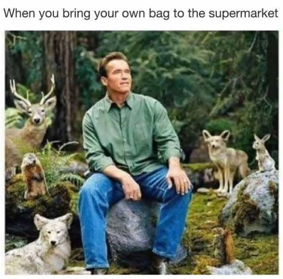

Summary of the Solution
Our solution for the problem is to make environmentally related memes and post it on instagram
Benefits of the solution
The benefits of our solution is that they could get entertained, reflect and learn
Feautures of the solution
Our solution will show the consequences and effects of littering. It will tell people to stop littering but funny at the same time. It will be shown through a picture
How does it work?
The participants will first read the Meme, they will analyze it and then their reaction to it will do its job.
Background of the solution
Based on our research, memes influences people in many ways. In the US, Donald Trump and Hillary Clinton actually used memes to swing votes in their favor. The meme "Naruto Runs"also affected many people. Making them to partake these runs. The meme "succes kid" made the kid in the picture, named "Sammy Griner", popular. He actually saved his dying father through the funds which was dontaed by his fans. In facebook, many people posts memes and share memes. Even our schoolmates use it and have fun with it. Therefore, these memes impact people greatly in either a positive way or negative way.
Sample:
